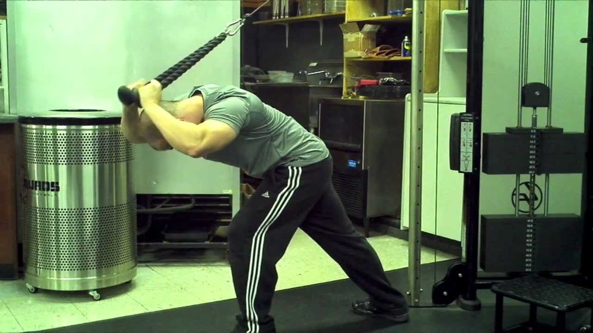
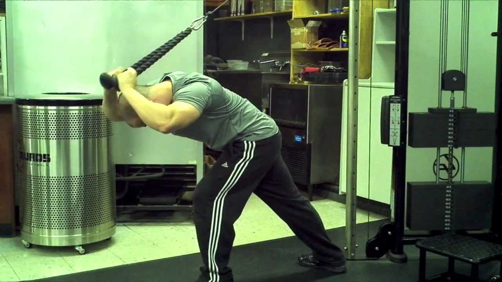

(1 set |15-12-10-8-6-4-2)
Info: There will be 1 set. Focus on control and contraction. Choose a weight attainable for 15 reps. After completing the reps, pass the bar to a buddy and then take the bar back when your buddy is done and drop the number of reps for the next set. If you are alone, set the bar down and rest for the amount of reps counted in seconds.
Form: Grab the bar on the outer portion of the EZ bar. Keeping your elbows in the same position at your sides, curl the bar upward until it nearly touches your chest. Return it to the starting position.

(4 sets |15, 10, 5, 10)
Info: There will be 4 sets. Focus on control and contraction. Increase the weight 10-15% and decrease the reps for the first 3 sets. Add 10-15% back on for the final set.
Form: Grab the easy curl bar on the closer portion of the bend. On a flat or incline bench, extend your arms so they are straight up. Keeping your elbows in place, lower the bar slightly above your forehead and the extend straight.
(3 sets |10, 5, 5)
Info: There will be 3 sets. Focus on control and contraction. Increase the weight 15-20% and decrease the reps after the first set.
Form: Place your arm on a preacher curl pad. Keeping the upper part of your triceps on the pad and positioning yourself so that your armpits are touching the pad, curl the bar upward toward your body. Perform one arm at a time.

(3 sets |15-10, 15-10, 15-10)
Info: There will be 3 sets. Focus on control and contraction. Perform the first part of the set doing traditional skullcrusher reps with one arm. For the second part, turn your hand inward 90 degrees and perform the rest of the set doing reps across your body.
Form: Grab the dumbbells and extend them straight above you with your palms facing inward. Keeping your elbows in place, lower the dumbbells until they nearly touch your shoulder before extending them back to the starting position.
 

(3 sets |10/10xAMRAP, 10/10xAMRAP, 10/10xAMRAP)
Info: There will be 3 sets. Focus on control and contraction. For the curls, perform 10 reps with a 1-count up, 1-count squeeze, and 3-count negative tempo. Then perform 10 reps with a 1-count up 1-count negative tempo. Finish the set by performing the tricep extensions for as many reps as possible using the same weight.
Form: For the curls, grab a rope and position it at the top of the cable. Lean slightly backwards and grab the rope with your palms facing each other. Keeping your arms in front of you and elbows in place, curl the rope towards you to squeeze the biceps.
For the extensions, leave the rope at the top of the cable. Turn around and extend the rope so it is above your head and in front of you. Keep your elbows in place and allow the rope to nearly touch the top of your head before extending your arms back to the start.